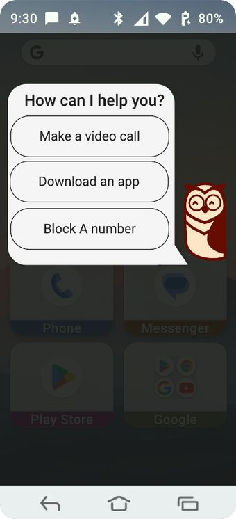
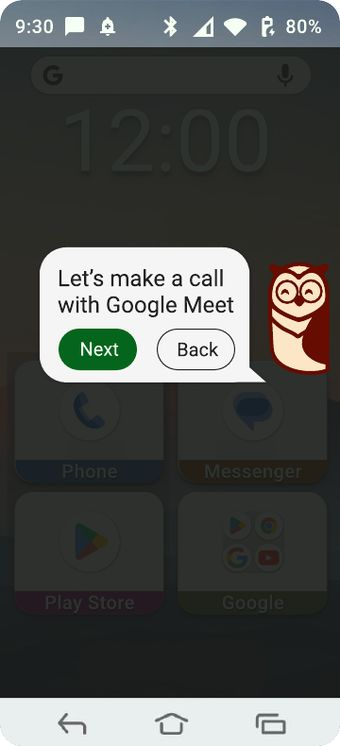
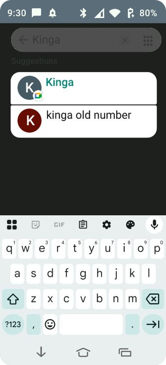
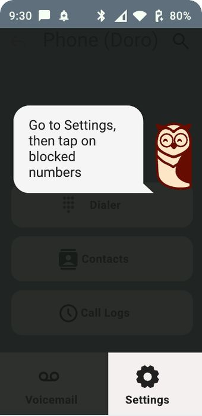
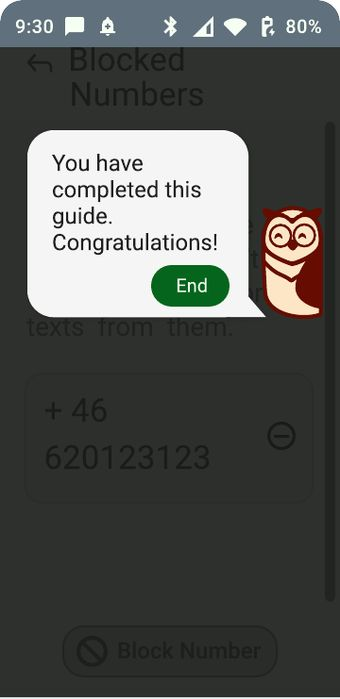

Access / Group project, Dec 2025Doro
Accessible guidance system
+
Overview
A group project of five for the Graphical User Interfaces course, designed for Doro phones and older users. We made an on-screen owl guide that talks people through everyday tasks such as making a video call, downloading an app or blocking a number, so they can use their phone independently.
The idea
The owl was chosen to suggest knowledge and guidance. One short instruction appears at a time in a speech bubble, while the relevant apps and buttons are highlighted and everything else is dimmed. The owl can be moved, and tapping it opens or closes the guide.
My contribution
My sketch proposed a “guide me” function available from the home page and throughout the phone. It opens with a polite, plain question and lists options by how often they are used. It also adds a confirmation step before a call starts, to avoid accidental taps.
Process
Everyone sketched ideas, from app groups to side bars and search helpers. We combined them into one guided shortcut system.
Contrast and shadows made actions easy to spot and cut distractions. A limited round of user testing supported the owl idea.
We dropped outlines and the bubble arrow, raised contrast and shortened the text. Buttons light up when pressed to confirm each action.
Final screens




